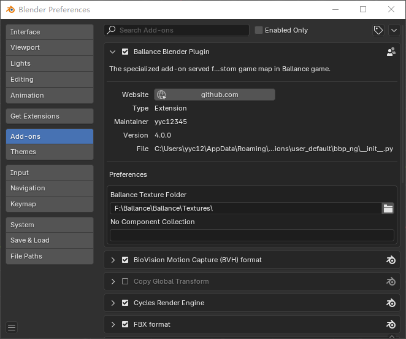

安装插件
明确版本
BBP对Blender支持的原则是支持当前最新的 LTS 版本，在最新的LTS版本释出之后会花一些时间迁移插件。当前插件版本 4.3，基于Blender 4.5.x 版本。
理论上而言，如果Blender没有做出重大改动，那么BBP可以在其它版本上正常运行。例如你可以尝试在Blender 4.0上运行基于Blender 3.6 LTS的BBP插件。但BBP的开发者不会处理仅在非LTS版本中才出现的Bug。在安装插件之前，请先选择适合的版本。
卸载旧插件
如果你之前使用过BBP，那么你需要首先卸载它。旧版的BBP通常被安装在下列的位置中：
<Blender>/3.6/scripts/addons/ballance_blender_plugin：BBP 3.0或更低版本<Blender>/3.6/scripts/addons_contrib/ballance_blender_plugin：BBP 3.0或更低版本<Blender>/3.6/scripts/addons/bbp_ng：BBP 4.0内测版本%APPDATA%/Blender Foundation/Blender/3.6/scripts/addons/bbp_ng：BBP 4.0内测版本%APPDATA%/Blender Foundation/Blender/4.2/extensions/user_default/bbp_ng：BBP 4.0或更高版本
你只需要先在Blender中关闭插件（把插件名前面的勾取消），然后再删除这些文件夹（如果它们存在的话）即可完全卸载插件。路径中的<Blender>指代你的Blender安装位置。路径中的3.6和4.2是你安装的Blender的版本号，需要根据你安装的版本进行调整，后续出现的版本号也按此理解。
不应使用Blender的插件卸载功能
不能使用Blender插件页面的插件卸载功能卸载BBP，因为BBP只要被Blender加载（无论是否启用），都会将Virtools文件读写库BMap加载进Blender。若在Blender运行期间删除，会出现拒绝访问错误。因此您必须在关闭Blender后手动删除插件目录。
如果您实在无法确定插件安装到了哪里，可以在Blender的偏好设置中的插件页面里找到File属性，其指向文件所在的文件夹就是要删除的文件夹。
ballance_blender_plugin和bbp_ng
ballance_blender_plugin是旧版BBP插件（4.0版本前）的模块名，bbp_ng是新版BBP插件（4.0版本后，包括4.0版本）的模块名。为了保证用户确实删除了旧版插件，所以同时提供了这两者。
addons和addons_contrib
在Blender 3.6 LTS版本，即BBP 3.3版本之后，Blender不再支持Testing类型插件。因而导致安装Testing插件专用的addons_contrib文件夹不再使用，插件需要被统一安装在addons中。为了保证用户确实删除了旧版插件，所以同时提供了这两者。
addons和extensions
在Blender 4.2 LTS版本，Blender使用扩展（Extensions）而非插件（Addons）来描述插件。因而导致安装插件的位置也发生了变化。为了保证用户确实删除了旧版插件，所以同时提供了这两者。
下载插件
你可以通过本工程的GitHub代码库的Release页面下载最新的插件。插件是以ZIP压缩包形式提供的。
此外，你还可以在yyc12345提供的制图教程网盘中获得此插件：
不要直接下载本仓库使用
请不要直接下载本项目的代码库来进行使用。首先是因为最新的commit不能保证其是稳定可用的。其次是因为本项目中包含了一些需要编译的C++代码，必须经过编译才能使用。参见编译与分发插件了解更多。
安装插件
开启Blender，选择Edit - Preferences，在打开的窗口中转到Add-ons选项卡，点击窗口右上方的箭头，然后点击Install from Disk...按钮，选择刚刚下载完毕的ZIP压缩包，即可安装完成。若没有在列表中看到可点击刷新按钮或重启Blender。
你也可以选择手动安装插件（如果上述安装方法失败了的话），转到%APPDATA%/Blender Foundation/Blender/4.2/extensions/user_default，创建一个名为bbp_ng的文件夹并进入，将下载好的ZIP压缩包内容解压到此文件夹下，启动Blender，即可在插件列表中找到BBP。
BBP插件在列表中的名称为Ballance Blender Plugin，找到后勾选名称左侧的勾即可启用插件。插件安装成功后的偏好设置窗口如下图所示。

在 安装或更新 完插件后，请在使用前务必先配置插件，详情请参阅下一章节。